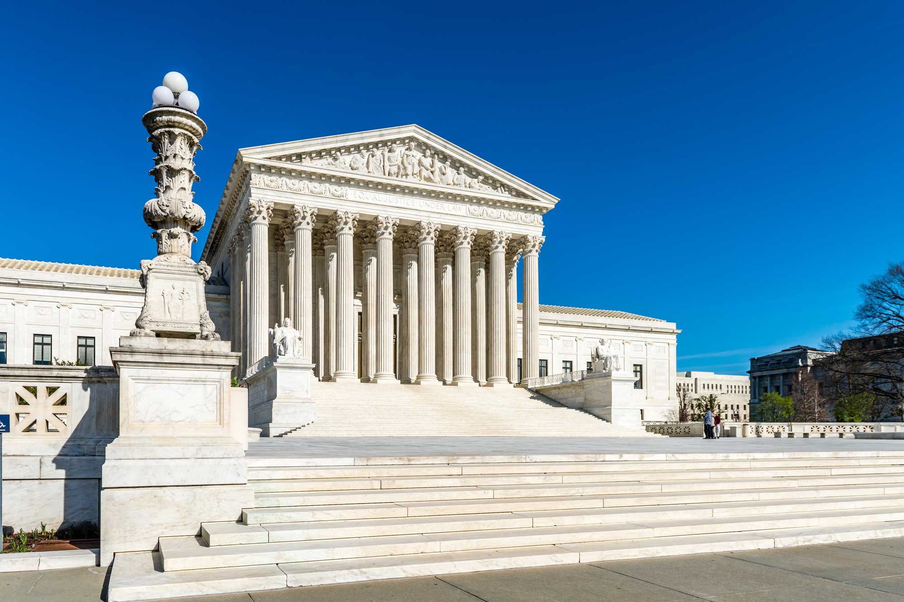
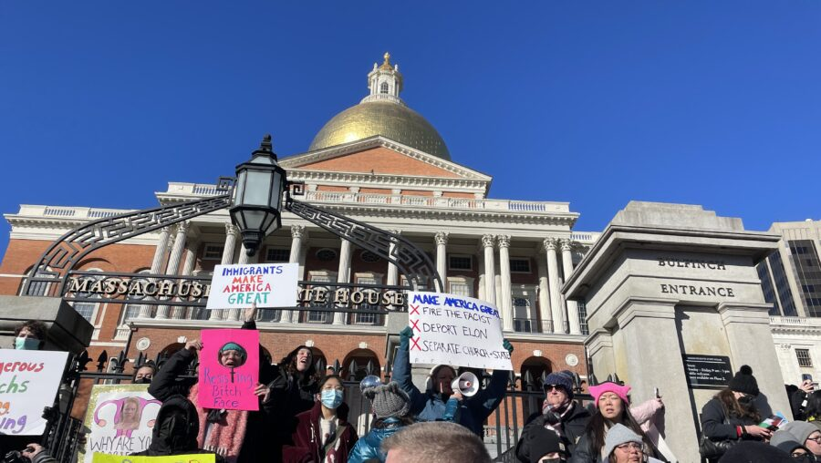

US Supreme Court Takes Up Key Case on Ending TPS Protections for Migrants



In a ruling issued Monday, the court opted not to remove protections afforded to Haitian and Syrian immigrants under the Temporary Protected Status (TPS) program. This means those affected can keep living and working in the U.S. legally while the legal battle plays out.
Simultaneously, the justices chose to fast-track the case, setting the stage for arguments in April and a decision later this year, probably in June.
Why This News Matters
This case could change the lives of hundreds of thousands of people living in the U.S. under Temporary Protected Status. For now, people from Haiti and Syria can stay, but the bigger question is who has the final say: the courts or the president? The result could change how immigration protections work for a long time.
What Is Temporary Protected Status (TPS)?
The crux of the matter concerns Temporary Protected Status. This program, created by Congress in 1990, offers refuge to individuals from certain countries. The catch? They can remain in the U.S. if going back would be perilous, thanks to war, natural disasters, political turmoil, or other humanitarian emergencies.
While TPS doesn't pave a direct path to citizenship, it does grant work authorization and shields recipients from deportation. These protections are renewable, typically for a year and a half.
At present, more than 1.3 million individuals are safeguarded by TPS across various nations.
Trump Administration’s Argument
The Trump administration wants to end TPS protections for migrants from several countries, claiming that conditions in some countries have improved, that the program was intended to be temporary but has been repeatedly extended, and that the executive branch, specifically the Department of Homeland Security, has sole authority to decide when protections should end.
In court documents, US Solicitor General D. John Sauer contended that lower courts had overstepped their authority by rejecting immigration policy choices.
"Lower courts are again attempting to block major executive-branch policy initiatives," Sauer said, citing potential harm to national interests and foreign relations.
The administration also wants the court to adopt a larger order limiting lower courts' power to interfere in future TPS determinations.
Lower Courts Blocked Immediate Deportations
Federal judges in New York and Washington, D.C. had already halted the administration's attempt to quickly withdraw protections for approximately 350,000 Haitians and 6,000 Syrians.
Judges determined that terminating TPS too soon could cause significant injury and, in one case, hinted that the decision was influenced by racism against nonwhite immigrants, something the government rejects.
Appeals courts upheld the rulings, prompting the government to request an emergency intervention from the Supreme Court.
Why Haiti and Syria Are Central to the Case
The legal battle's core revolves around the dire circumstances in Haiti and Syria. Haiti's Temporary Protected Status (TPS) was created in the wake of the catastrophic 2010 earthquake, which claimed more than 200,000 lives. Gang violence continues to plague the nation, further complicated by a turbulent political climate and a multitude of humanitarian emergencies. Millions are still uprooted, facing shortages of food, shelter, and medical assistance.
Lawyers challenging the policy contend that repatriating migrants to Haiti could be perilous, pointing to the persistent violence and recent reports of fatalities after deportation.
Syria was granted Temporary Protected Status (TPS) in 2012, a direct reaction to the intensifying civil war. Despite the fall of the Assad regime in 2024, the country's path to recovery remains significantly obstructed by the protracted conflict.
Advocates contend that Syria isn't yet a secure environment for large-scale repatriation.
Court’s Mixed Signal: Pause Now, Decide Soon
The Supreme Court's ruling represents a middle ground approach.
For the time being, protections remain in place to prevent swift deportation. The court agreed to rapidly resolve the broader legal issue.
This is a change from previous cases. In 2025, the court gave the administration the green light to terminate Temporary Protected Status for Venezuelan migrants. This decision came despite ongoing legal battles, jeopardizing the status of approximately 600,000 people.
This time, though, the court didn't simply rubber-stamp the administration's stance, implying the matter deserved a closer look.
Key Legal Questions Ahead
The court's discussions are likely to address several key issues. Among them: can courts even review TPS decisions? Does the executive branch have unqualified authority to rescind protections? And do migrants have legitimate constitutional claims, such as equal protection under the law?
The ruling in this case has the potential to redefine the legal landscape for immigration policy disputes across the country.
Broader Immigration Crackdown Context
The case comes amid the Trump administration's broader drive to tighten immigration policies during his second term. TPS designations for Afghanistan, Yemen, Somalia, Ethiopia, Nicaragua, and Honduras are being phased down.
Critics contend that the government is undermining humanitarian protections, while advocates believe it is returning the program to its original transitory purpose.


Koepka’s Leap of Faith: What Comes Next After LIV Golf Exit
DECEMBER 24, 2025

Skenes and Skubal Win Cy Young Awards as Future Uncertainty Grows
NOVEMBER 12, 2025


Politics

Kevin McCarthy Ousted as House Speaker in Historic Vote
The House kicked out its speaker for the first time in American history after a GOP mutiny joined Democrats in a historic and dramatic vote.
POLITICS BY OCTOBER 18, 2025

Democrats are facing a growing grassroots uprising one year after Trump came back to power
As complaints from inside the party grow after Trump's reelection, younger voters and progressive groups are pushing Democratic leaders to work toward affordable housing, fairer economics, and big changes.
POLITICS BY NOVEMBER 5, 2025
Congress Passes Temporary Spending Bill to Avoid Early 2025 Shutdown
Lawmakers approved a stopgap bill to keep the government funded into March, avoiding an immediate shutdown as both parties brace for a tougher budget fight in weeks ahead.
POLITICS BY NOVEMBER 9, 2025